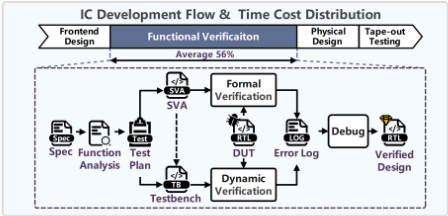
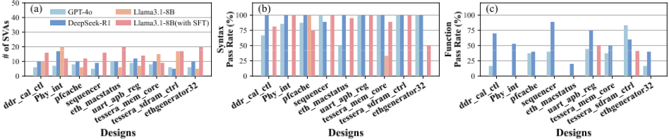
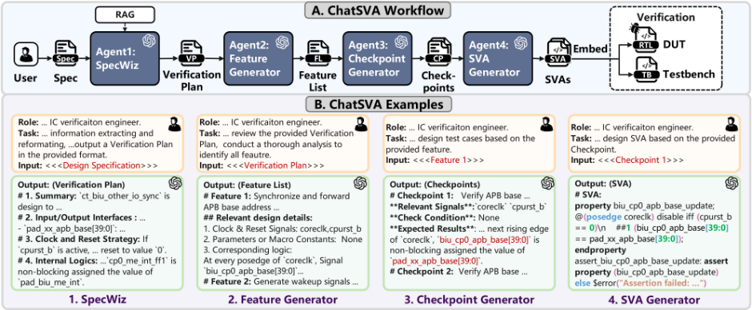
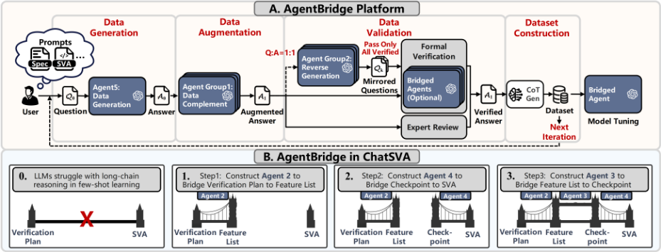
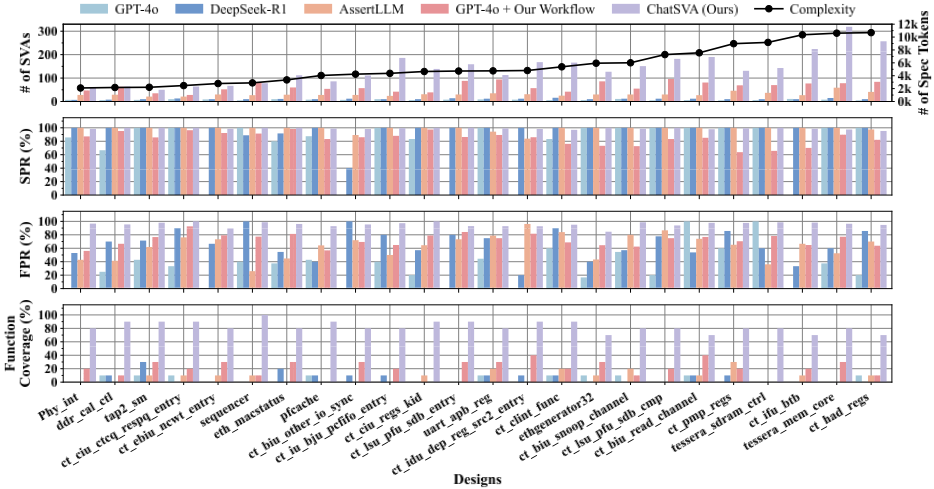
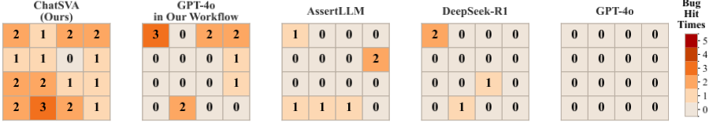
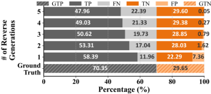

ChatSVA：通过任务专用 LLM 弥合硬件验证中的 SVA 生成鸿沟
论文针对功能验证占 IC 开发周期 50% 以上、SVA 手工编写低效易错，且现有 LLM 单步 Spec-to-SVA 翻译功能正确率低、领域训练数据稀缺的问题，提出 ChatSVA 多智能体生成框架与 AgentBridge 数据合成平台。ChatSVA 将生成任务分解为 Spec→Verification Plan→Feature List→Checkpoint→SVA 四阶段长链推理流水线，由四个专用 agent 协作完成，并拒绝以 RTL 代码为输入以避免 verification contamination；AgentBridge 依据方向性信息约束、golden 数据溯源、输出可验证性三原则，通过多 agent 反向生成校验与 formal 验证闭环合成高纯度 CoT 数据，用于对 Llama3.1-8B 专用 agent 做全参数 SFT。在 24 个 RTL 设计上取得 98.66% 语法通过率、96.12% 功能通过率、82.50% 功能覆盖率，较此前 SOTA AssertLLM 功能正确性提升 33.3 个百分点、功能覆盖率提升超 11 倍。该工作对团队协议 SVA 自动生成与验证自动化建设有直接参考价值。
功能验证消耗 IC 开发周期 50% 以上，SVA 作为 formal property 与仿真 runtime monitor 的标准载体，其手工编写劳动密集、易出错且依赖专家经验；现有 LLM 方法将 SVA 生成视为单步 Spec-to-SVA 翻译，导致生成结果语法正确但功能错误（functional hallucinations），且部分方法以 RTL 为输入引入 verification contamination 风险，同时领域内高质量训练数据严重稀缺，尚缺乏可靠的 LLM 辅助 SVA 生成方法学。
提出 ChatSVA 端到端多智能体系统：将单体生成任务分解为四阶段长链推理流水线（SpecWiz/Agent1 从 Spec 提取结构化 Verification Plan → Feature Generator/Agent2 生成模块化 Feature List → Checkpoint Generator/Agent3 生成实现级 Checkpoint → SVA Generator/Agent4 将 Checkpoint 翻译为可直接嵌入 formal 验证或仿真的 SVA），并明确不使用 RTL 代码作为输入。配套 AgentBridge 数据合成平台，遵循三原则（方向性信息约束、golden 数据溯源、输出可验证性），利用 k 个独立 agent 的反向生成校验过滤幻觉 False Positive，记录验证路径生成 CoT 训练数据，形成自改进闭环；用合成的 15.36 GB 数据集对 Llama3.1-8B（Agent2-4）在 8×A800 上做全参数 SFT，Agent1 采用 GPT-4o+RAG。
在 24 个 RTL 设计（FIXME benchmark）上：平均每设计生成 139.5 条 SVA，Syntax Pass Rate 98.66%，Function Pass Rate 96.12%，Function Coverage 82.50%
较此前 SOTA AssertLLM（FPR 62.84%、Function Coverage 仅 7.50%）：功能正确性提升 33.3 个百分点，Function Coverage 提升超 11 倍
较通用模型：Function Coverage 较 GPT-4o（4.17%）提升 19.80×、较 DeepSeek-R1（5.83%）提升 14.14×，SVA 生成数量较 GPT-4o 增加超 18 倍
消融实验：仅长链推理工作流（S1）即把 GPT-4o 的 FPR 从 43.09% 提至 72.88%（+29.79pp）、Function Coverage 从 4.17% 提至 20.83%（近 5×）；叠加 AgentBridge 数据微调（S2）后 Function Coverage 进一步从 20.83% 提至 82.50%（近 4×）
bug 检测定性分析：ChatSVA 覆盖 16 种 bug 类型中的 15 种，而 AssertLLM 仅识别 6 种，通用模型基本无效
AgentBridge 数据精度验证：agent 数量从 k=1（FP 率 7.36%，P=88.8%）增至 k=5（FP 率降至 0.05%，P=99.9%）
区别于以往单步 Spec-to-SVA 翻译或仅做 prompt engineering/RAG 增强的方案：(1) 将 SVA 生成重构为镜像专家验证流程的四阶段长链推理，引入 Verification Plan、Feature List、Checkpoint 等结构化中间表示，使每一步可验证；(2) 提出 AgentBridge 通用数据合成框架，以三原则加多 agent 反向生成校验与 formal 验证闭环解决 few-shot 领域数据稀缺，并自动产出 CoT 训练数据；(3) 拒绝以 RTL 为输入，避免模型学习并复制既有设计缺陷的 verification contamination；(4) 对各阶段 agent 用任务专用数据分别微调（Llama3.1-8B），而非依赖通用大模型直接生成。
相关度级别：high
命中能力域：2.4 设计验证方法学 | 2.5 形式验证与等效性检查 | 2.7 EDA/验证自动化与 AI 辅助
理由：团队交付 LPDDR4/4X、LPDDR5X、LPDDR6、DDR5/MRDIMM、HBM4、UCIe 等高速协议 IP，SVA 是协议合规检查在 formal property verification 与仿真 runtime monitor 两条路径上的核心载体，assertion 编写是验证交付中的真实人力瓶颈。本文直接命中 2.4（ABV 验证方法学与功能覆盖率）、2.5（formal property 自动生成）与 2.7（LLM 辅助验证自动化与可复用方法学沉淀），其 Spec→SVA 长链分解流水线与 AgentBridge 数据合成闭环均可迁移到团队协议 Spec 到 assertion/checker 的自动化生成，属于高相关。
建议动作：深入精读并做内部分享
arXiv:2604.02811v2 [cs.AR] 2026年4月15日
Lik Tung Fu 1,2 , Jie Zhou 1,2 , Shaokai Ren 2 , Mengli Zhang 2 , Jia Xiong 1,2 ,
Hugo Jiang 1,2 , Nan Guan 3 , Xi Wang* 1,2 , Jun Yang 1,2
1 国家 ASIC 中心，东南大学集成电路学院，中国
2 国家集成电路设计自动化技术创新中心，中国
3 香港城市大学计算机科学系，中国香港
Email: liktungfu@seu.edu.cn, 230240053@seu.edu.cn, renshaokai@nctieda.com, zhangmengli@nctieda.com, xiongjia@seu.edu.cn,
101013615@seu.edu.cn, nanguan@cityu.edu.hk, xi.wang@seu.edu.cn, dragon@seu.edu.cn
* 通讯作者。

仿真中的运行时监视器。尽管其功能强大，手动编写 SystemVerilog 断言（SVA）已成为瓶颈，因为该过程劳动强度大、容易出错且需要专业知识 [33]。因此，实现 SVA 生成的自动化对于打破验证僵局至关重要。
围绕 SVA 自动化的探索已出现多种方法。早期传统的自然语言处理（NLP）尝试因语义理解浅层而受阻，无法把握复杂的设计意图 [10, 38]。大语言模型（LLM）的出现标志着一个范式的转变 [4, 25, 32]，催生了新的研究，这些研究表明其泛化能力相较前代方法实现了显著飞跃 [3, 36]。然而，决定性的突破仍然难以企及，因为当前方法将 SVA 生成视为单步翻译，忽视了其作为复杂长链推理过程的本质。这种有缺陷的整体式处理方式，又因高质量、领域特定训练数据的长期匮乏而雪上加霜。
为应对这些挑战，我们提出了 ChatSVA——一个多智能体 SVA 生成框架，以及 AgentBridge——一个数据合成与增强平台。我们的解决方案在语法通过率（Syntax Pass Rate）、功能通过率（Function Pass Rate）和功能覆盖率（Function Coverage）方面显著增强了 SVA 生成效果。我们的主要贡献如下：
功能验证占据 IC 开发生命周期 50% 以上的时间，其中 SystemVerilog 断言（SystemVerilog Assertions，SVA）对于形式化属性验证以及增强的基于仿真的调试不可或缺。然而，手动编写 SVA 是一项劳动密集且容易出错的工作。尽管大语言模型（Large Language Models，LLM）展现出前景，但其直接部署受到功能准确率低以及领域特定数据严重匮乏的阻碍。为应对这些挑战，我们提出了 ChatSVA，一个基于多智能体框架构建的端到端 SVA 生成系统。其核心在于，AgentBridge 平台通过系统化地生成高纯度数据集来支撑这一多智能体方法，克服了小样本（few-shot）场景中固有的数据稀缺问题。在 24 个 RTL 设计上的评估表明，ChatSVA 达到了 98.66% 的语法通过率和 96.12% 的功能通过率，每个设计生成 139.5 条 SVA，功能覆盖率达 82.50%。与此前最先进水平（state-of-the-art，SOTA）相比，这在功能正确性上提升了 33.3 个百分点，功能覆盖率提升了 11 倍以上。ChatSVA 不仅在自动化 SVA 生成方面树立了新的 SOTA，还为解决小样本、领域特定场景下的长链推理问题建立了一个稳健的框架。公开可访问的 ChatSVA 网络服务可通过 https://www.nctieda.com/CHATDV.html 获取。
SystemVerilog 断言（SVA），大语言模型（LLM），大语言模型辅助设计（LLM-aided Design），形式验证
在专用领域架构与异构计算 [1113, 27] 的推动下，集成电路（IC）复杂度呈指数级增长，由此造成了一个关键瓶颈：功能验证。该阶段消耗了 IC 开发生命周期 50% 以上的时间（图 1），是硬件设计中最耗费人力的环节 [7, 29]。传统仿真日益不足，导致代价高昂的流片后缺陷风险居高不下 [5, 19]。
为应对这一问题，使用 SystemVerilog 断言（SVA）的基于断言的验证（ABV）已成为一种标准实践 [14, 35]。SVA 既作为用于穷尽检查的形式化属性，又作为
本作品采用知识共享署名 4.0 国际许可协议进行许可。DAC '26, Long Beach, CA, USA © 2026 版权归所有者/作者所有。ACM ISBN 979-8-4007-2254-7/2026/07
https://doi.org/10.1145/3770743.3804146

并在一个综合性基准测试上展现出最先进（SOTA）的生成能力。
自动化 SVA 生成长期以来一直是一项挑战。早期的工作主要沿两条路径展开。动态方法从仿真轨迹中“挖掘”SVA [6, 9, 30]，但其存在根本性缺陷：这类方法依赖于存在缺陷的 DUT，并且需要测试平台激励，因而丧失了形式验证的优势。另一方面，静态方法则使用传统自然语言处理（NLP）技术来解析规格说明（Spec）。尽管人们曾通过增强框架 [8, 10, 18, 38] 或混合机器学习技术 [1, 17, 24] 做出诸多尝试以提升其泛化能力，但这些方法始终受限于 LLM 出现之前的方法所具有的有限语义理解能力。
大语言模型（LLM）的出现标志着一次范式转变，为一直困扰早期方法的语义鸿沟提供了一种有前景的解决方案 [15, 21, 34, 37]。当前研究已迅速汇聚于两种主要策略：（1）通过提示工程或检索增强生成（RAG）来增强通用模型 [3, 16, 22, 23, 36]；（2）使用领域特定数据对较小的模型进行微调 [2, 20, 26, 28]。
尽管在语法正确性方面取得了显著改进，但这些方法的实际效用仍然有限，其主要原因在于它们依赖于一种存在缺陷的单一化方法论。大多数方法将 SystemVerilog 断言（SVA）生成视为从规格说明（Spec）到代码的单步翻译 [2, 22, 23, 26, 28]。这种过度简化的方法迫使研究焦点集中于“语法正确性”而非“功能有效性”，因为它缺乏对复杂设计意图进行推理所需的中间步骤。因此，生成的 SVA 往往在功能上过于简单或存在错误，几乎无法提供有意义的验证覆盖率。此外，这一方法论上的弱点还因一种高风险的做法而进一步加剧：将寄存器传输级（RTL）代码本身作为输入来引导生成 [3, 16, 22]。这引入了“验证污染”问题，即模型可能学习并复现现有的设计缺陷，从而破坏了验证的根本目的。因此，尽管近期取得了进展，一种可靠且安全的 LLM 辅助 SVA 生成方法论仍有待建立。
为了实证检验我们对当前主流单体式策略的批评，我们在 FIXME 基准 [31] 上分析了具有代表性的模型（GPT-4o、DeepSeek-R1 以及 Llama3.1-8B base/SFT）。该实验旨在将方法论的价值与最终数据的价值分离开来，其结果十分严峻（图 2）：(1) SVA 的数量很少，每个设计从未超过 20 条 SVA。(2) 通用模型往往能获得较高的语法通过率（Syntax Pass Rate），有时甚至达到 100%，而经过微调的模型尽管相比其基础版本有显著提升，仍无法与之匹敌。(3) 最关键的是，所有模型的功能通过率（Function Pass Rate）都很差。这些结果揭示了三个根本性挑战：
C1：生成能力不足。这些结果凸显了清晰的性能上限。通用模型较高的语法通过率与普遍偏低的功能通过率形成鲜明对比，揭示出一个关键的脱节：模型能够达到语法正确，却在功能上失败。微调模型的改进有限，这证明仅对最终输出进行微调无法有效捕捉深层功能逻辑。这种功能上的失败，加之生成数量偏低，证实了单体式方法严重限制了实际生成能力。
C2：有缺陷的单体式方法论。C1 指出了一个方法论上的缺陷：将 SVA 生成视为单体式的 Spec-to-SVA 翻译。这种单步方法迫使模型优先保证语法正确性而非功能有效性，因为它缺乏对复杂设计意图进行推理的中间步骤。这迫使模型进行一次缺乏引导的推理跳跃，使 LLM 容易产生“功能性幻觉”，即生成语法有效但功能错误的 SVA。
C3：少样本数据困境。由于公开数据稀缺，硬件验证本质上是一个少样本（few-shot）问题。这种稀缺性促使各种方法走向单体式方法论，因为即使收集 Spec-to-SVA 数据对也颇具挑战，更不用说中间数据了。这形成了一个恶性循环：单体式方法忽视了用于教授推理的中间数据，使模型陷入学习表面映射而非深层验证逻辑的困境。
前文识别出的三大挑战要求方法论上的根本性转变。为了解决这些相互关联的问题，我们提出了一种双管齐下的策略，旨在打破方法论过度简化与数据稀缺之间的恶性循环。

S1：长链推理分解。S1 通过将单体式任务分解为模块化子任务流水线，直接针对 C2 和 C1。这提供了 C2 所指出的缺失的中间推理步骤，将关注点从语法正确性转向功能意图。通过用一系列可验证的步骤取代单次不可靠的跳跃，该策略直接解决了 C1 中观察到的功能通过率（Function Pass Rate）偏低的根本原因。该策略在我们的 ChatSVA 框架（第 4 节）中得到具体实现。
S2：面向少样本学习的数据合成。虽然 S1 对设计任务提供了系统化的分解，但仅靠分解无法克服 C3 中指出的数据稀缺挑战。为此，我们提出了 AgentBridge（第 5 节），这是一个统一的数据合成框架，可为 ChatSVA 流水线中的每个智能体生成高质量、任务特定的数据集。值得注意的是，AgentBridge 为解决 C1 提供了一条切实可行的路径，因为高功能正确性主要依赖于丰富且一致的训练数据。
硬件设计。完整的 Spec 应涵盖功能描述、输入输出端口、内部寄存器映射以及内部信号的时序行为。(2) 验证计划（Verification Plan）：一种结构化的中间表示，用于总结 Spec 中的功能描述，提取信号逻辑关系和验证需求，并将其格式化为标准化模板以供下游处理。(3) 特性列表（Feature List）：从验证计划中提取并细化设计需求与约束。特性列表描述硬件设计在各种测试场景下的预期功能。(4) 检查点（Checkpoint）：特性列表的详细实现级描述。每个检查点代表一个特定的验证点；单个特性列表可以映射到多个检查点。(5) SVA：检查点的代码级实现。
协同作用。综合来看，S1 和 S2 构成一对互补的策略。S1 将整体任务分解为结构上连贯的单元，明确了每个阶段需要生成什么；S2 则为每个单元提供所需的数据，使智能体能够可靠地执行应如何生成。这种结构引导与数据支持之间的相互作用，使流水线不再局限于生成语法上看似合理的输出，而是朝着在 SVA 生成中实现功能正确性迈进。
如第 3 节所述，ChatSVA 框架实例化了我们的长链推理分解策略。它将单体式的 Spec 到 SVA 任务转化为结构化的四阶段流水线，与专家验证工作流程相呼应（图 3.A）。这种分解基于一系列定义明确的中间数据表示，由它们连接各个阶段。我们将这些关键表示定义如下：(1) Spec：ChatSVA 工作流程的高层次自然语言描述。ChatSVA 通过四阶段的大语言模型（LLM）流水线自动完成 SVA 生成，从用户提供的 Spec 出发。首先，SpecWiz 智能体（Agent1）提取验证关键信息，生成结构化的验证计划（图 3.B.1）。随后，该中间表示由特性生成器（Agent2）处理，生成模块化的特性列表（图 3.B.2）。接着，检查点生成器（Agent3）从每个特性生成详尽的、面向具体实现的检查点（图 3.B.3）。最后，SVA 生成器（Agent4）将各个检查点转换为语法正确的 SVA，可直接嵌入形式验证或仿真中使用（图 3.B.4）。四个专用智能体的这种协同工作，系统地自动化了功能需求的提取、分析以及向具体实现的映射，从而确保了高质量的 SVA 生成。
如第 3 节所述，AgentBridge 旨在解决 SVA 生成中的数据稀缺难题。其设计目标是在 ChatSVA 流水线的各个阶段生成高质量数据集。为实现这一目标，AgentBridge 构建在三项基础原则之上，这些原则指导其数据合成过程。

黄金数据（原则 2）由 Agent5 处理，生成候选答案 𝐴 0 = { 𝑎 1 , ..., 𝑎 𝑁 } 。这种 1 : 𝑁 分解遵循原则 1，确保每个候选 𝑎 𝑖 都是 𝑄 0 的可验证功能子集。接着，在数据增强（Data Augmentation）阶段，Agent Group1 分析 𝑄 0 → 𝐴 0 映射，以识别并填补覆盖缺口，并将其输出合并为增强集合 𝐴 1。所谓"Agent Group"（智能体组），是指集合中每个元素被独立处理的过程。随后的数据验证（Data Validation）阶段采用混合协议（原则 3）。对于一般的 1 : 𝑁 任务，𝐴 1 中的每一项都会被直接验证。对于 1 : 1 映射，该工作流采用稳健的反向生成检查：Agent Group2 从 𝐴 1 生成镜像问题 𝑄 𝑘，只有当 𝑄 𝑘 中的所有问题均通过验证时，集合 𝐴 1 才会被接受。验证方法是面向具体任务的，包括形式验证、专家评审，或通过 Bridged Agents 进行转换。最后，在数据集构建（Dataset Construction）阶段，经过验证的候选与原始问题 𝑄 0 配对。通过记录成功的验证路径，生成思维链（Chain-of-Thought, CoT）提示。该 CoT 与最终的问答对共同构成用于微调所有内部智能体（包括 Bridged Agents）的数据集，从而闭合了自我提升循环。
如图 4.B 所示，我们实例化 AgentBridge，为 ChatSVA 框架中的三个专用智能体构建数据集。该过程从 Agent2 开始。为满足原则 2，我们通过将 Spec 结构化为经专家验证的验证计划（Verification Plans）来建立黄金输入。随后，Agent2 将这些验证计划分解为特征列表（Feature Lists）。这些输出随后通过专家评审加以验证，这是原则 3 下的一种直接验证方法。接下来，鉴于 Agent4 具有关键的 1 : 1 映射，我们策略性地优先构建其数据集。这一双射任务是原则 1 的一个特例，使得稳健的逆向生成验证成为可能：从一个黄金 SVA 生成一个 Checkpoint，以构成候选对。为验证该候选对，使用所生成的 Checkpoint 逆向生成一个新的 SVA。仅当该新 SVA 与原始黄金 SVA 功能等价时，原始候选对才被确认为正确，且该过程由形式验证予以强化。最后，经过微调的 Agent4 充当 Bridged Agent，用于
AgentBridge 数据生成过程将输入集 D in 转换为输出集 D out，该过程遵循三项原则。原则 1：方向性信息约束。该原则要求信息流具有方向性，即输出是输入的功能子集。这种结构确保任何生成的输出相对于其源都具有明确的“对或错”状态，而非部分正确。借助语义解释函数 sem (·)（其将一个工件映射到其功能集合），该原则被形式化为：
该约束允许分解类任务（例如 Spec-to-SVA），但排除那些在逻辑上不健全、需要凭空捏造信息的综合类任务。
原则 2：基准真值溯源。为确保原则 1 所确立的方向性信息流的完整性，输入集 D in 必须完全源自经过验证的“黄金”数据集 D gold。预处理函数 𝜙 为特定的生成任务准备这些黄金数据。
这确保了整个过程锚定于无错误数据的基础之上，从而防止级联失效。
原则 3：输出可验证性。原则 1 确保输出具有明确的状态，而该原则进一步要求必须存在一种实用的方法来确定该状态。我们定义了一个通用验证函数 V( 𝑦 )，它封装了使用直接方法（V direct）或 Bridged Agent（B）的混合协议。
V( 𝑦 ) 的结果是布尔值（True/False），从而保证输出的状态能够被实际确定。
如图 4.A 所示，AgentBridge 工作流是一个自我改进的闭环，能够系统地生成高纯度数据集。该过程始于数据生成（Data Generation）阶段，其中输入 𝑄 0 为 Agent3 构建数据集，从而解决了数据验证的挑战。对于 Agent3 生成的每个 Checkpoint，Agent4 都会将其转换为可验证的 SVA。这种闭环验证策略使 Checkpoint 生成任务变得具体可验证。

6.1.1 模型训练。我们构建了一个 15.36 GB 的数据集用于监督微调（SFT）和检索增强生成（RAG），该数据集由流水线所有阶段的数据组成，并融入了领域知识与验证指南。Agent2-4 所使用的 Llama3.18B 模型在 8 × A800 GPU 服务器上通过 LlamaFactory [39] 进行了全参数 SFT。关键超参数包括序列长度 8192、学习率 1e-5、批大小 64，训练 3 个 epoch。对于高层推理，Agent1 使用结合 RAG 的 GPT-4o。所有 Agent 的温度均配置为 0.2。
6.1.2 基线与基准。我们将 ChatSVA 与通用模型（GPT-4o、DeepSeek-R1）以及 AssertLLM [36] 进行对比评估。选择 AssertLLM 作为最主要的 SOTA（最先进）基线，因为它同样是一个从 Spec 生成 SVA 的多 Agent 框架，是我们方法的直接对标对象。如第 2 节所述，本对比有意排除了需要以寄存器传输级（RTL）代码作为输入的方法，以避免潜在的共源错误。为确保公平比较，我们以 GPT-4o 作为基础模型复现了 AssertLLM 的方法。所有方法均在 FIXME 基准 [31] 上进行评估，该基准是一个综合性的公开测试集，涵盖多样化的工业设计（例如 CPU、GPU、IP）。
6.1.3 评估指标。我们为 SVA 质量定义了三个关键指标：语法通过率（SPR）、功能通过率（FPR）和功能覆盖率（Function Coverage）。这些指标通过通用通过率公式（式 4）计算，该公式利用了式 3 中的验证函数 V。在计算时，V 的布尔结果被视为 1 或 0。SPR 衡量语法正确的 SVA 所占的比例。FPR 评估在语法有效的 SVA 中功能正确的 SVA 所占的比例。功能覆盖率评估功能正确的 SVA 针对预定义 bug 类型（Protocol Violations、Illegal Branch 等）的 bug 检测能力。
为验证 AgentBridge 生成高纯度训练数据的能力，我们测量其数据精确率（Data Precision, P）。我们首先从 500 多个 golden SVA 生成一组 checkpoint 候选，并对其进行人工标注以建立真值——即真值正例（Ground Truth Positive, GTP）或真值负例（Ground Truth Negative, GTN）。随后，AgentBridge 对这些相同的候选进行验证，将其分类为验证正例（Validation Positive, VP）或验证负例（Validation Negative, VN）。该过程产生四种结果：被正确验证的 GTP 项为真阳性（True Positives, TP），被错误验证的 GTN 项为假阳性（False Positives, FP），以及与之对应的真阴性（True Negatives, TN）和假阴性（False Negatives, FN）。由于 FP 代表可能污染训练集的有害幻觉数据，因此精确率 P = TP TP + FP 是评估该平台过滤有效性的关键指标。
6.2.1 SVA 生成质量与有效性。如图 5 所示，ChatSVA 在 SVA 生成方面确立了新的 SOTA（最先进水平），平均每个设计生成 139.50 条 SVA，SPR 达 98.66%，FPR 达 96.12%，功能覆盖率达 82.50%。这一性能超越了所有基线方法。与通用大语言模型（LLM）相比，ChatSVA 已具备坚实的基础，而在由 AgentBridge（S2）生成的高纯度数据上进行微调，对于掌握硬件验证的复杂语义并实现 SOTA 性能而言是不可或缺的。


在功能覆盖率方面，相比 GPT-4o（4.17%）和 DeepSeekR1（5.83%）分别取得了 19.80 倍和 14.14 倍的提升，SVA 生成数量相比 GPT-4o 也增长了超过 18 倍。这表明，在缺乏指导性方法论的情况下，即使是强大的通用 LLM 也无法生成全面且功能正确的 SVA。更重要的是，ChatSVA 显著优于 AssertLLM。尽管 AssertLLM 具有较高的 SPR（98.52%），但其 FPR 和功能覆盖率分别仅为 62.84% 和区区 7.50%。因此，ChatSVA 在功能覆盖率上较 AssertLLM 实现了 11 倍的提升，这是功能验证领域的一次重大飞跃。AssertLLM 的功能性能低下、与通用模型相当，这表明其多智能体结构虽然方向正确，却缺乏用于有效推理分解和数据供给的机制。ChatSVA 借助我们的 S1 和 S2 策略克服了这些局限。
6.2.2 消融研究。为了剖析这一性能提升的来源，我们开展了消融研究，以分离出我们两项核心策略的贡献：长链推理分解（S1）与领域特定数据合成（S2）。首先，为了验证 S1 的效力，我们在不使用任何微调模型的情况下，将我们的工作流应用于 GPT-4o。我们的工作流将基础 GPT-4o 的 FPR 从 43.09% 提升至 72.88%（+29.79pp），并将功能覆盖率提升了近 5 倍（从 4.17% 提升至 20.83%）。此外，尽管二者使用的是相同的 GPT-4o 基础模型，这一经工作流引导的模型在所有功能指标上均优于 AssertLLM（FPR：+10.04pp；功能覆盖率：+13.33pp）。这证明 ChatSVA 工作流通过对长链推理过程进行结构化，是性能的主要驱动因素，并且优于先前的框架。接下来，为了证明 S2 的关键作用，我们将我们工作流中的 GPT-4o 与完整的 ChatSVA 框架进行对比。完整的 ChatSVA 框架进一步将功能覆盖率从 20.83% 提升至 82.50%——较经工作流引导的 GPT-4o 提升了近 4 倍。这突出表明，尽管优越的工作流（S1）提供了一个
6.2.3 定性分析。为了评估超越平均分数的实际缺陷检测质量，我们分析了图 6 中所检测缺陷的分布情况。ChatSVA 展现出系统且全面的覆盖能力，成功识别出 16 种独特缺陷类型中的 15 种。这些检测结果的均匀分布表明，ChatSVA 能够生成针对广泛功能逻辑的多样化 SVA 集合，使其成为可靠的验证伙伴。与之形成鲜明对比的是，所有基线模型均无法提供可靠的覆盖。GPT-4o 和 DeepSeek-R1 等通用模型基本无效，而 AssertLLM 仅表现出零星的成功，仅识别出 16 种缺陷类型中的 6 种。这种不可靠的表现证实，只有完整的 ChatSVA 框架才能提供实际硬件验证所必需的广泛且均衡的覆盖。
6.2.4 AgentBridge 的验证。高纯度训练数据对我们的监督微调（SFT）方法至关重要，我们验证了 AgentBridge 在生成此类数据方面的有效性。AgentBridge 利用一种新颖的反向生成机制（Agent Group2），使用 𝑘 个独立智能体来过滤可能污染数据集的幻觉性假阳性（FP）。如图 7 所示，将智能体数量从 𝑘 = 1（产生高达 7.36% 的 FP 率）增加到 𝑘 = 5（几乎消除 FP，仅剩 0.05%），使数据精确率（P）从 88.8% 提升至接近完美的 99.9%。这代表了一种刻意为之的权衡，即优先保证纯度而非完整性。
在本工作中，我们提出了 ChatSVA，一个端到端的多智能体系统，利用 AgentBridge 在少样本、长链推理任务中实现高纯度的数据生成与验证。实验表明，ChatSVA 达到了 SOTA 性能，SPR 为 98.66%，FPR 为 96.12%，功能覆盖率为 82.50%，相比之前的 SOTA 在缺陷检测方面取得了超过 11 倍的提升。本工作推动了敏捷验证的发展，并将 AgentBridge 确立为 IC 验证领域中一种可泛化的数据集构建方法。